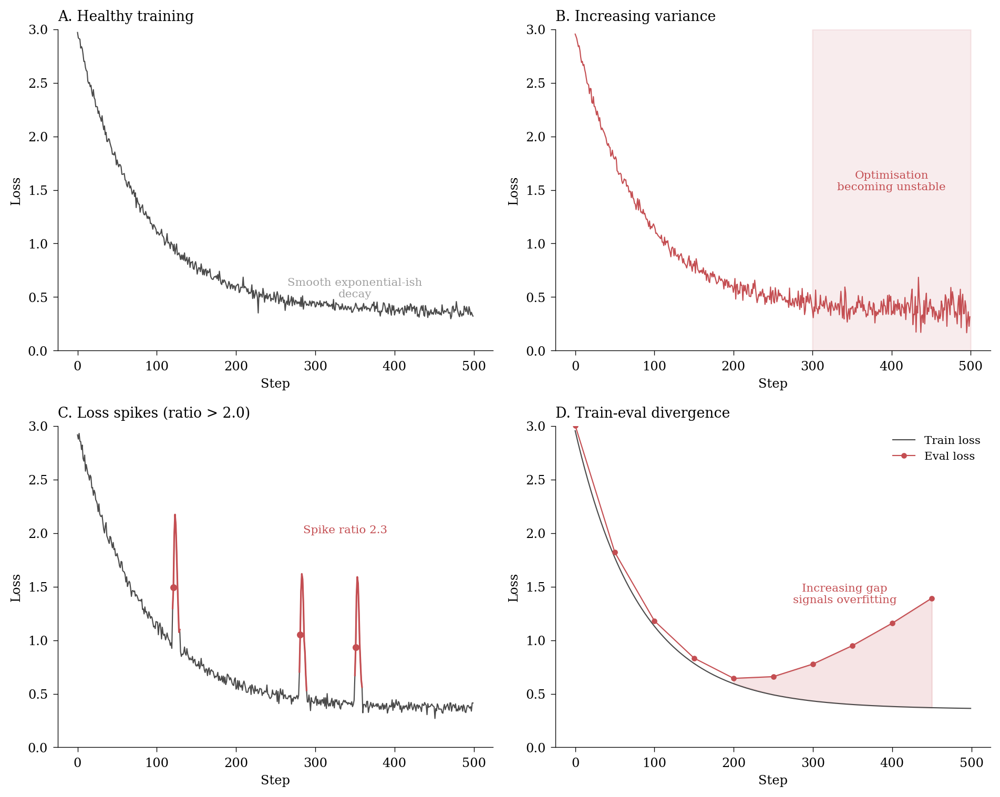
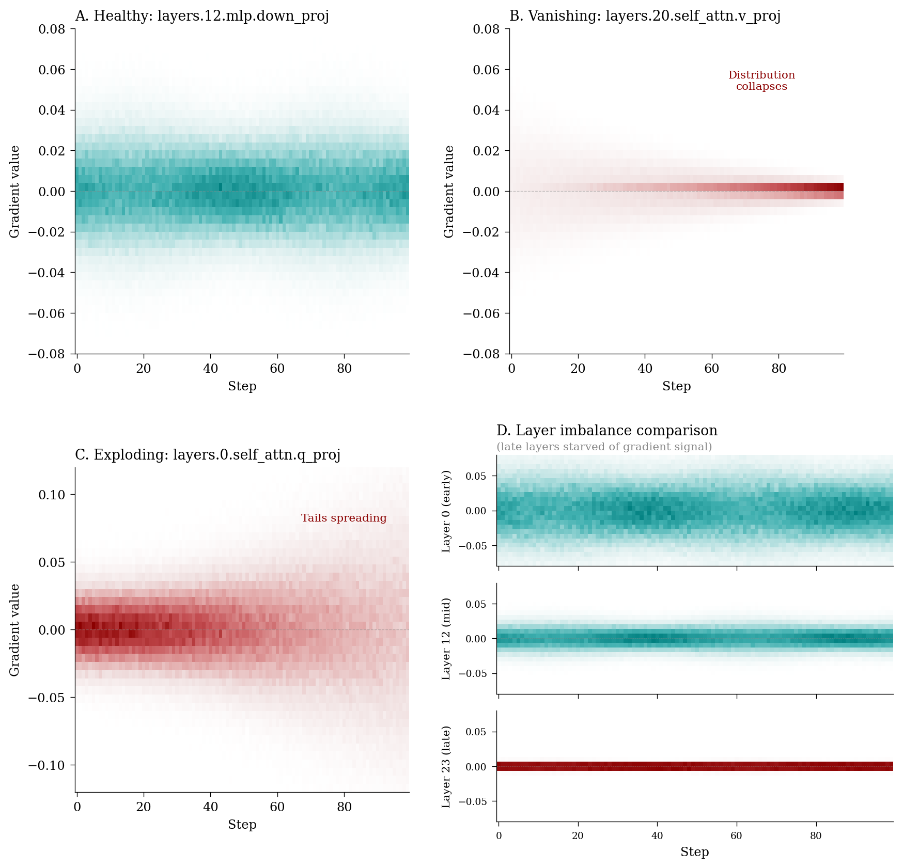
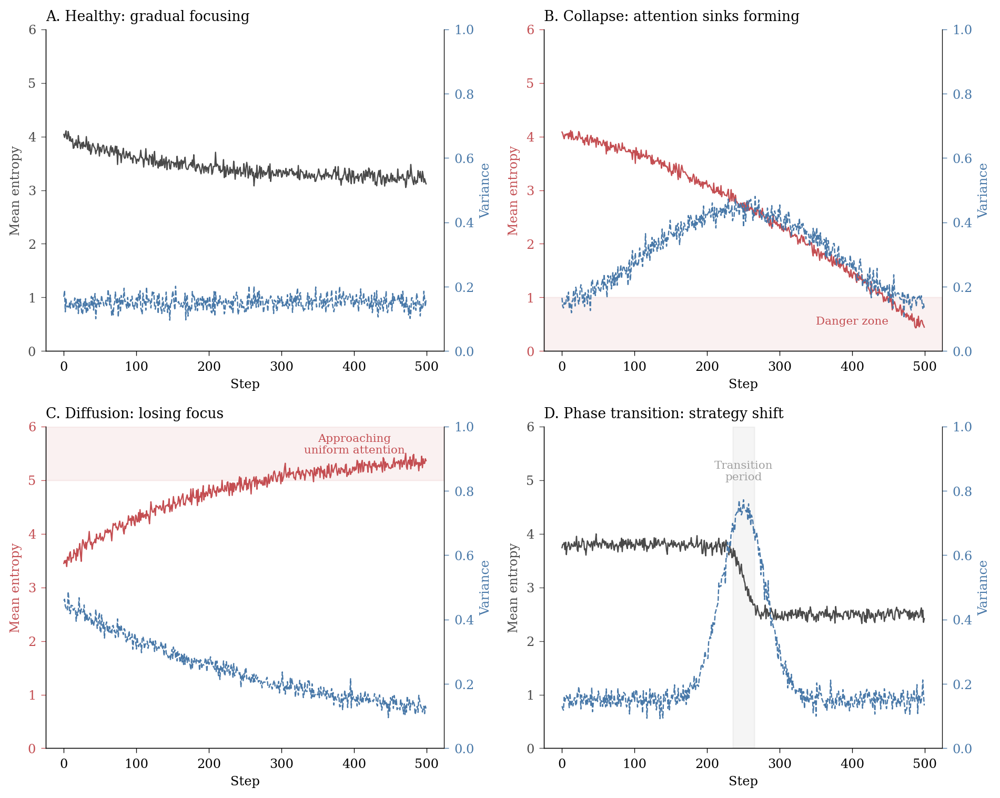
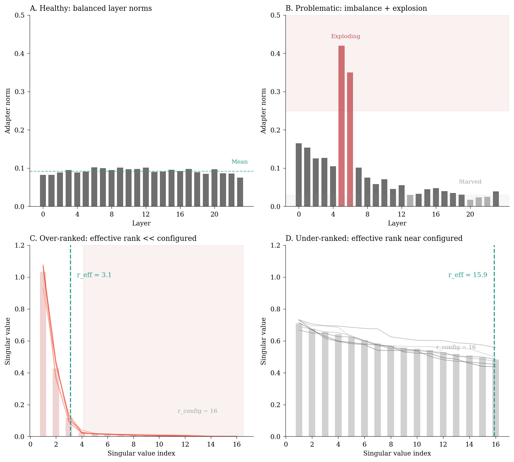
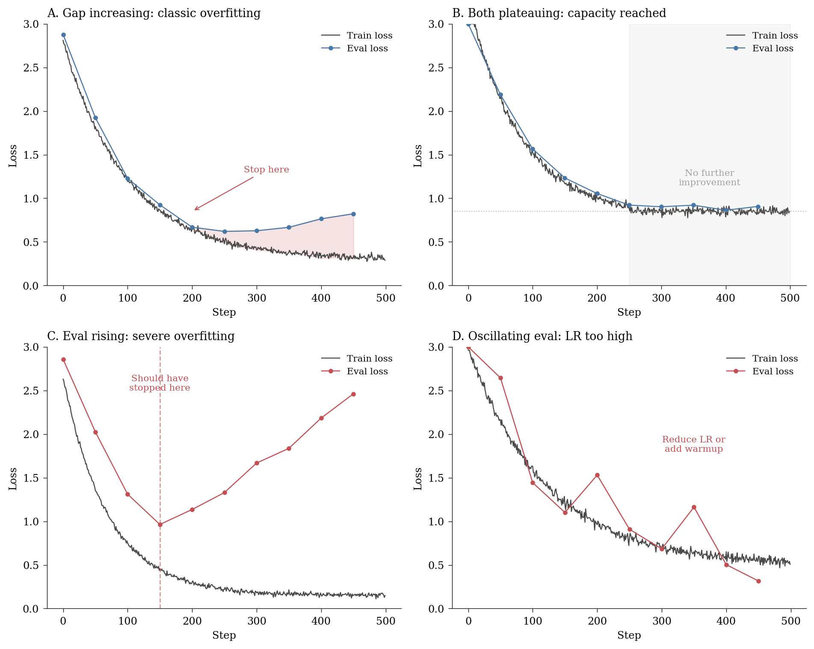
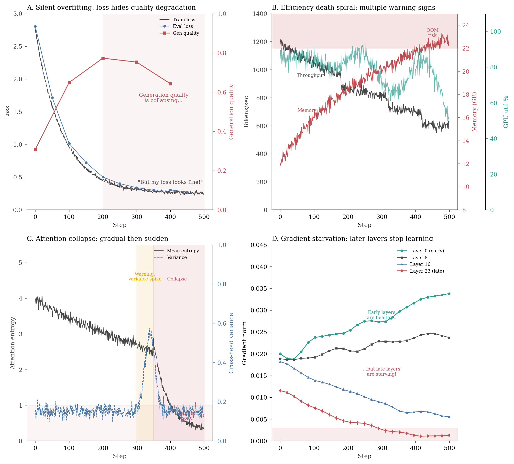

Beyond loss curves – what you should actually be watching when fine-tuning LLMs.
Author
Chris von Csefalvay
Published
25 December 2025
TipHey, I’m writing a book about this!
I’m actually writing a book about this stuff. It turns out there isn’t a lot of literature on how to do post-training at the level too big for single-GPU laptop-sized hobby projects and requiring enterprise reliability on one hand, but not quite at the scale of multi-team distributed post-training you’d get in foundation labs. That’s a problem, because a lot of the current value in fine-tuning applications comes exactly out of that large, crucial market. I am in the last phases of putting together the manuscript for The Frontier Playbook, a set of curated tactics and techniques for real world operationalisation of LLMs. Sign up for updates here.
Jimmy Doolittle, later famous for leading the daring Doolittle Raid on Tokyo in 1942, was a pioneering aviator in the 1920s and 30s. One of his key contributions to aviation was the first of what at the time was called “blind” flight – what we would refer to as IFR (Instrument Flight Rules) flight today. Doolittle demonstrated that with the right set of instruments, a pilot could safely navigate and land an aircraft without any external visual references. A few years later, instrument flying became increasingly standardised, and in the late 1930s, the main instruments and their arrangement into the “basic T” layout of six key instruments – affectionately referred to as the six-pack – was formalised. To this day, virtually all aircraft have the same instrument cluster in the same order, and every pilot is trained to interpret them. Together, they create a fairly comprehensive picture of the aircraft’s state and environment.
You should aspire to have the same for your LLM post-training.
Unfortunately, that doesn’t come without some effort. Even though really good tools exist for monitoring fine-tuning runs, what you get out of the box is often quite lacklustre. When you fire up a fine-tuning run and open your Weights & Biases dashboard, you’re greeted with the same three faithful companions: training loss, validation loss and gradient norm. They’re like the speedometer, fuel gauge and temperature warning light of the machine learning world – essential, certainly, but hardly sufficient for understanding what’s actually happening under the bonnet. Nobody would fly a commercial airliner with three instruments, and nobody should run a fine-tuning job of any seriousness with just loss curves and a gradient norm.
More important than what you see is knowing how to read those instruments. As you monitor a post-training job, regardless of whether it’s SFT, DPO, GRPO, even something more exotic, you’re largely after the same information: is the model learning what you want it to learn, is the optimisation stable, are there any silent failure modes creeping in, and when should I stop? Knowing how to read the instruments properly means you’ll know a lot about the model while it’s still in the oven, so to speak, and you can catch issues early. This is useful for the ML hobbyist, but indispensable for the enterprise practitioner. At that scale, a solid training run can cost north of five figures – not foundation lab training cost scale (it is estimated that a single training run of a modern foundation model is easily in the realm of nine figures), but enough that wasting runs is eventually going to attract management attention.1
1 I’m being my usual flippant self here, but there’s a very real economic, environmental and social cost to wasted compute. We owe it to the world and to future generations to make sure we make every watt of compute count. One can disagree about the ethics of the money and energy and CO2 emissions that are devoted to training LLMs – it is rather harder to argue that wasting those resources is in any way justifiable.
The purpose of this post – the first in a series of three – is twofold: to explain what a comprehensive post-training instrument cluster looks like for the easiest ‘base case’ (plain vanilla SFT) and provide you with the code to implement it yourself on one hand, and learning how to interpret them on the other.
The case for comprehensive monitoring
Before we dive into the instruments themselves, it’s worth asking: why bother? The loss is going down, the model is learning, what more do you need?
The answer, as with most things in machine learning, is that the happy path is easy and the failure modes are numerous. A decreasing loss curve can mask catastrophic forgetting. A stable gradient norm can coexist with attention collapse. A model can achieve excellent validation loss while generating nonsense. Worse, many of these failure modes are silent until you actually deploy the model and discover, often at significant cost, that something went wrong twenty hours into a forty-hour training run.2
2 I’ve seen production fine-tuning runs where the model appeared to be learning beautifully right up until generation quality fell off a cliff. The loss was still decreasing. The gradient norm was textbook perfect. The only hint that something was wrong was a subtle shift in the attention entropy that nobody was monitoring.
3 Even better, good monitoring can often prevent failures from happening in the first place. Catching a loss spike or a gradient explosion early can save hours of wasted compute and frustration. Monitoring logs can – indeed, should! – act as release gates at worst, meaning you might well avoid the ‘mortem’ part altogether.
Enterprise fine-tuning adds another dimension of complexity. You’re not just training a model, you’re accountable for training a model. When a stakeholder asks why a particular run failed, ‘the loss looked fine but the model doesn’t work’ is not an acceptable answer. Comprehensive monitoring provides the forensic trail that turns post-mortems from guesswork into analysis.3
Instrument 1: the loss landscape
Let’s start with the obvious: loss. But we’re going to look at it properly.
The default wandb setup gives you train/loss and eval/loss as single scalar values. This is necessary but insufficient. What you actually want is a richer picture of the loss landscape:
Loss variance is particularly diagnostic for LoRA fine-tuning, where you’re updating a small fraction of parameters and the optimisation landscape can be surprisingly bumpy.
Loss variance increasing: The optimisation is becoming unstable. Consider reducing learning rate.
Loss trend flattening while absolute loss is still high: You’ve hit a plateau. Either the learning rate is too low, or you’ve exhausted what this architecture can learn from this data.
Loss spike ratio > 2.0: Something dramatic happened. Check for data corruption, gradient explosion or memory issues.
Eval loss diverging from train loss: The classic overfitting signal, but in LoRA training this can also indicate that your adapter rank is too high for your dataset size.

Figure 1: Loss landscape diagnostics: what healthy and unhealthy training looks like.
Sometimes, such visual guides note the existence of a pattern they call a ‘stuck loss curve’. This is essentially a perfectly fine ‘done’ loss curve (i.e. flat loss) with very high variance. It is pathological, but it’s just a special case of increasing variance, and in my view, shouldn’t be a category of its own.
Instrument 2: gradient histograms
A single gradient norm scalar tells you almost nothing. What you actually want is the distribution of gradients across your parameters. Weights & Biases can log histograms natively, and you should take advantage of this wherever possible, but it’s important you understand what to look for.
Gradient histograms are one of the most underused diagnostic tools in deep learning. A single glance at the distribution shape tells you more than a hundred scalar metrics. The problem is, they take a lot of experience to interpret. WandB has done the world a massive service with making them pop out of the box by default if you configure it mostly the right way, but knowing what to look for is another matter entirely. There are relatively few good heuristics for what good and bad gradient distributions look like, and I’ve seen more disagreement among perfectly competent practitioners on this topic than almost any other.
The mathematics of gradient pathology is straightforward but worth stating precisely. During backpropagation, the gradient of the loss \(\mathcal{L}\) with respect to the weights \(W_1\) in an early layer depends on the chain of derivatives through all subsequent layers:
where \(\phi'_\ell\) is the derivative of the activation function at layer \(\ell\) and \(z_\ell\) is the pre-activation. The product structure is the culprit: if the spectral norm \(\|W_\ell\| < 1\) for most layers, the product shrinks exponentially with depth and gradients vanish. Conversely, if \(\|W_\ell\| > 1\) and \(\|\phi'_\ell\| > 1\), the product grows exponentially and gradients explode. With ReLU activations, an additional failure mode emerges: wherever \(z_\ell < 0\), the derivative is exactly zero, causing entire gradient paths to die.4
4 This is the mathematical foundation of the ‘dying ReLU’ problem. It’s also why Leaky ReLU, GELU and other activations with non-zero gradients everywhere have become popular in modern architectures.
Parameter-wise gradient histogram logging
class GradientHistogramCallback(TrainerCallback):"""Log parameter-wise gradient histograms to wandb."""def__init__(self, log_every_n_steps: int=50):self.log_every_n_steps = log_every_n_stepsself.step_count =0def on_pre_optimizer_step(self, args, state, control, model=None, **kwargs):"""Capture gradients before optimizer.step() clears them."""self.step_count +=1ifself.step_count %self.log_every_n_steps !=0:returnif model isNone:returnimport wandb histograms = {} stats = {}for name, param in model.named_parameters():if param.grad isNone:continue grad = param.grad.detach().flatten().cpu().numpy() short_name =self._simplify_name(name)# Log histogram to wandb histograms[f"gradients/{short_name}"] = wandb.Histogram(grad)# Also log summary statistics stats[f"grad_stats/{short_name}/mean"] =float(np.mean(grad)) stats[f"grad_stats/{short_name}/std"] =float(np.std(grad)) stats[f"grad_stats/{short_name}/max"] =float(np.max(np.abs(grad))) stats[f"grad_stats/{short_name}/sparsity"] =float( np.mean(np.abs(grad) <1e-8) )if wandb.run isnotNone: wandb.log({**histograms, **stats})def _simplify_name(self, name: str) ->str:"""Simplify parameter name for readable logging.""" parts = name.split(".") simplified = []for p in parts:if p.isdigit(): simplified.append(f"L{p}")elif"lora"in p.lower(): simplified.append(p.replace("_", ""))elif p in ("q_proj", "k_proj", "v_proj", "o_proj"): simplified.append(p.replace("_proj", ""))return"_".join(simplified) if simplified else name[-30:]

Figure 2: Gradient distribution over time (wandb-style): steps on x-axis, gradient values on y-axis, density as colour.
What to watch for:
Distribution collapsing to a spike at zero: Vanishing gradients. Your model has stopped learning, often because of dying ReLUs, excessive regularisation or a learning rate that’s far too low.
Fat tails extending far from zero: Exploding gradients. Even if the mean looks fine, occasional extreme values will destabilise training. Gradient clipping can help, but investigate the root cause.
Different layers having wildly different spreads: Layer imbalance. Early layers dominating late layers (or vice versa) indicates poor initialisation or the need for layer-wise learning rate scaling.
Bimodal or multimodal distributions: Often indicates that different parameter groups (e.g. attention vs MLP, or LoRA A vs B matrices) are learning at very different rates. Not always bad, but worth investigating.
Instrument 3: learning rate dynamics
The learning rate schedule is decided before training, so why monitor it? Because what matters isn’t what you planned but what actually happened.
Warmup is particularly important for LoRA. Jumping straight to your target learning rate can cause the adapter weights to overshoot before the base model activations have stabilised.
Learning rate monitoring with phase detection
class LearningRateMonitor(TrainerCallback):"""Track effective learning rate and detect phase transitions."""def__init__(self):self.lr_history = []self.phase ="warmup"def on_step_end(self, args, state, control, **kwargs):# Get current learning rate from optimizer lr = state.learning_rate ifhasattr(state, "learning_rate") elseNoneif lr isnotNone:self.lr_history.append(lr)# Detect phase transitionsiflen(self.lr_history) >10: recent =self.lr_history[-10:]ifall(recent[i] >= recent[i+1] for i inrange(len(recent)-1)): new_phase ="decay"elifall(recent[i] <= recent[i+1] for i inrange(len(recent)-1)): new_phase ="warmup"else: new_phase ="peak"if new_phase !=self.phase:print(f"LR phase transition: {self.phase} -> {new_phase}")self.phase = new_phase
What to watch for:
Warmup too short: If your loss is unstable in the first few hundred steps, you probably needed more warmup.
Peak learning rate never reached: This happens with some schedulers when total steps are miscalculated. The training never operates at full learning rate.
Learning rate effectively zero before training ends: Overly aggressive decay. Your final epochs are wasted.
Instrument 4: attention entropy
This is where we leave the standard metrics behind. Yes, histograms are art, loss landscapes are science, but attention entropy is where we begin to get into chef’s kiss territory.
Attention entropy measures how focused or diffuse the model’s attention patterns are, and it’s one of the most diagnostic metrics for detecting subtle training pathologies. Mathematically, for a single attention head with attention weights \(\boldsymbol{\alpha} = (\alpha_1, \alpha_2, \ldots, \alpha_n)\) over a sequence of length \(n\) (where \(\sum_i \alpha_i = 1\) after softmax), the entropy is defined as:
The bounds are intuitive: \(H = 0\) when all attention is focused on a single token (\(\alpha_j = 1\) for some \(j\), all others zero), and \(H = \log n\) when attention is uniformly distributed (\(\alpha_i = 1/n\) for all \(i\)). In practice, we average across heads and layers to get a scalar summary, but per-head entropy can reveal pathologies that aggregates hide.
Attention entropy monitoring
import torchimport torch.nn.functional as Fclass AttentionEntropyCallback(TrainerCallback):"""Monitor attention pattern entropy during training."""def__init__(self, log_every_n_steps: int=100, num_heads_to_sample: int=4):self.log_every_n_steps = log_every_n_stepsself.num_heads_to_sample = num_heads_to_sampleself.step_count =0def compute_entropy(self, attn_weights: torch.Tensor) ->float:"""Compute entropy of attention distribution."""# attn_weights: [batch, heads, seq, seq]# Normalise to valid probability distribution attn_probs = F.softmax(attn_weights, dim=-1)# Compute entropy: -sum(p * log(p)) entropy =-torch.sum( attn_probs * torch.log(attn_probs +1e-10), dim=-1 )return entropy.mean().item()def on_step_end(self, args, state, control, model=None, **kwargs):self.step_count +=1ifself.step_count %self.log_every_n_steps !=0:return# Hook to capture attention weights during forward pass# Implementation depends on model architecture# This is a simplified example entropy_stats = {"attention/mean_entropy": self._get_mean_entropy(model),"attention/entropy_variance": self._get_entropy_variance(model), }# Log metricsifhasattr(state, "log_history") and state.log_history: state.log_history[-1].update(entropy_stats)

Figure 3: Attention entropy diagnostics: mean entropy (solid) and cross-head variance (dashed) reveal different pathologies.
What to watch for:
Attention entropy collapsing towards zero: The model is attending to single tokens almost exclusively. This is often a sign of attention sink formation or degenerate patterns.
Attention entropy increasing unboundedly: The model is spreading attention uniformly – essentially not learning to focus. This can indicate that your task doesn’t require sequence understanding, or that something is wrong with positional encoding.
Sudden entropy changes mid-training: Phase transitions in what the model is learning. Not necessarily bad, but worth investigating. When exactly this is okay depends to a great extent on your task – and the answer may often enough be “never”. I see this a lot when we’re fine-tuning time series type transformers for semi-periodic signals. It’s okay for the model to have some attention entropy to see various scales of periodicities, but not essentially for it to blow up unboundedly.
Instrument 5: generation quality samples
No amount of metric monitoring replaces actually looking at what the model generates. Periodic sampling during training is essential for catching qualitative failures that quantitative metrics miss.
Repetition loops: The model gets stuck repeating phrases. Often indicates a temperature or sampling problem, but can also signal training issues.
Hallucination of training data: The model regurgitates training examples verbatim. You’re overfitting.
Format drift: The model’s output format changes during training. If you’re fine-tuning for a specific format, monitor for deviations.
Coherence deterioration: Early generations are coherent, later ones are not. Catastrophic forgetting in progress.
Instrument 6: LoRA adapter diagnostics
When training LoRAs, it’s crucial to monitor the behaviour of the adapter weights themselves. Their norms, effective ranks and relative changes can reveal whether the adapters are learning effectively or diverging. In particular, they are a crucial health check on our assumption about rank.
There are a few ways to determine effective rank, but a simple and effective method is to use the entropy of the singular value distribution. If the singular values are \(\sigma_1, \sigma_2, \ldots, \sigma_r\), we first normalise them to form a probability distribution: \[p_i = \frac{\sigma_i}{\sum_{j=1}^{r} \sigma_j}\]
Then, the effective rank is given by the exp of the entropy thereof, the calculation of which we have already had the pleasure above.
So far, so undergraduate stats. Where it gets tricky is to see this in the data, and know the right rank adjustments to make. Here, your Mk I Eyeball is your best tool, I’m afraid: what you’re looking for is the ‘cliff’ where singular values drop off sharply. If the effective rank is much lower than your configured rank, you can probably reduce it. If it’s at maximum, consider increasing it if your model is not learning. In either case of a rank mismatch, you’re wasting a valuable resource – in the case of overprovisioning, you’re wasting compute and memory, but in the case of underprovisioning, you’re wasting information theoretical value. In practice, that latter one is much harder to get back.
LoRA-specific monitoring
class LoRADiagnosticsCallback(TrainerCallback):"""Monitor LoRA adapter-specific metrics."""def__init__(self, log_every_n_steps: int=100):self.log_every_n_steps = log_every_n_stepsself.step_count =0self.initial_norms =Nonedef on_step_end(self, args, state, control, model=None, **kwargs):self.step_count +=1ifself.step_count %self.log_every_n_steps !=0:returnif model isNone:return lora_stats = {}for name, param in model.named_parameters():if"lora_"notin name.lower():continue weight = param.detach()# Basic statistics norm = weight.norm().item() lora_stats[f"lora/{name}/norm"] = norm# Effective rank (for lora_A and lora_B)iflen(weight.shape) ==2:try: s = torch.linalg.svdvals(weight.float())# Effective rank: how many singular values matter s_normalized = s / s.sum() entropy =-torch.sum( s_normalized * torch.log(s_normalized +1e-10) ) effective_rank = torch.exp(entropy).item() lora_stats[f"lora/{name}/effective_rank"] = effective_rankexcept:pass# Track relative change from initialisationifself.initial_norms isNone:self.initial_norms = {}if name notinself.initial_norms:self.initial_norms[name] = normelse: relative_change = (norm -self.initial_norms[name]) / (self.initial_norms[name] +1e-10 ) lora_stats[f"lora/{name}/relative_change"] = relative_change# Aggregate metricsif lora_stats: norms = [v for k, v in lora_stats.items() if"/norm"in k] lora_stats["lora/mean_norm"] = np.mean(norms) lora_stats["lora/norm_variance"] = np.var(norms)ifhasattr(state, "log_history") and state.log_history: state.log_history[-1].update(lora_stats)

Figure 4: LoRA adapter diagnostics: layer-wise norms reveal training health (top row), singular value spectra reveal rank utilisation (bottom row).
What to watch for:
Adapter norms exploding: The LoRA weights are growing too large. Either your learning rate is too high, or there’s a mismatch between your LoRA rank and the task complexity.
Effective rank much lower than configured rank: You’ve over-specified. Consider reducing the LoRA rank to save memory and potentially improve generalisation.
Effective rank at maximum: Your rank might be too low. The adapter is using all its capacity.
Large variance in norms across layers: Some layers are learning much more than others. This is often fine, but extreme variance can indicate problems.
Instrument 7: compute efficiency
Training efficiency metrics are often overlooked in research contexts but are critical for production training.
An efficiency drop during training often precedes other problems. Memory fragmentation, garbage collection and I/O bottlenecks can all manifest first as throughput degradation.
GPU utilisation below 80%: You’re bottlenecked somewhere else (data loading, CPU preprocessing). Increase dataloader_num_workers or enable pin_memory.
Tokens per second declining over time: Memory fragmentation or garbage collection pressure. Consider periodic garbage collection calls.
GPU memory usage climbing: Memory leak, often from gradient accumulation bugs or improper tensor handling in callbacks.
Sudden throughput drops: I/O problems, often when the training hits a slow region of the data (e.g., longer sequences).
Instrument 8: convergence detection
The final instrument in our cluster is arguably the most important: knowing when to stop.
Early stopping with convergence detection
class ConvergenceDetector(TrainerCallback):"""Detect convergence and potential overfitting."""def__init__(self, patience: int=5, min_delta: float=0.001, divergence_threshold: float=0.1, ):self.patience = patienceself.min_delta = min_deltaself.divergence_threshold = divergence_thresholdself.best_eval_loss =float('inf')self.epochs_without_improvement =0self.train_losses = []self.eval_losses = []def on_evaluate(self, args, state, control, metrics=None, **kwargs):if metrics isNone:return eval_loss = metrics.get("eval_loss", float('inf')) train_loss = metrics.get("train_loss", state.log_history[-1].get("loss", 0))self.train_losses.append(train_loss)self.eval_losses.append(eval_loss)# Log convergence metrics convergence_stats = {}# Check for improvementif eval_loss <self.best_eval_loss -self.min_delta:self.best_eval_loss = eval_lossself.epochs_without_improvement =0 convergence_stats["convergence/improving"] =1else:self.epochs_without_improvement +=1 convergence_stats["convergence/improving"] =0 convergence_stats["convergence/patience_remaining"] = (self.patience -self.epochs_without_improvement )# Check for overfitting (eval loss diverging from train loss)iflen(self.train_losses) >1andlen(self.eval_losses) >1: gap = eval_loss - train_loss prev_gap =self.eval_losses[-2] -self.train_losses[-2] gap_increase = gap - prev_gap convergence_stats["convergence/train_eval_gap"] = gap convergence_stats["convergence/gap_velocity"] = gap_increaseif gap_increase >self.divergence_threshold: convergence_stats["convergence/overfitting_warning"] =1print(f"WARNING: Potential overfitting detected. Gap increase: {gap_increase:.4f}")# Log metricsifhasattr(state, "log_history") and state.log_history: state.log_history[-1].update(convergence_stats)# Trigger early stoppingifself.epochs_without_improvement >=self.patience:print(f"Early stopping triggered after {self.patience} evaluations without improvement") control.should_training_stop =True

Figure 5: Convergence pathologies: knowing when to stop (or when you should have stopped earlier).
What to watch for:
Train-eval gap increasing: Classic overfitting. Stop training or increase regularisation.
Both losses plateauing: You’ve reached the model’s capacity on this task. More training won’t help.
Eval loss increasing while train loss decreases: Severe overfitting. You should have stopped earlier.
Oscillating eval loss: Learning rate too high for the current phase of training.
Putting it all together
The eight instruments we’ve covered form a complete picture of your training run:
Instrument
What it tells you
Failure mode it catches
Loss landscape
Optimisation progress
Instability, plateaus
Gradient health
Learning signal quality
Vanishing/exploding gradients
Learning rate
Schedule execution
Misconfigured schedules
Attention entropy
Model focus patterns
Attention collapse, degeneration
Generation samples
Output quality
Qualitative failures
LoRA diagnostics
Adapter behaviour
Rank mismatch, weight explosion
Compute efficiency
Resource utilisation
Bottlenecks, memory leaks
Convergence detection
When to stop
Overfitting, wasted compute
In a production setting, I recommend implementing all eight and setting up alerts for the key failure modes. A good heuristic: if any of these metrics deviate by more than two standard deviations from their moving average, that warrants investigation.5
5 This is crude but effective. More sophisticated anomaly detection is possible but often unnecessary for catching the failures that actually occur in practice.
The wandb configuration
To actually implement this, here’s a complete trainer configuration that wires up all the callbacks:
Knowing what to log is only half the battle. The other half is knowing what you’re looking at.
I recommend organising your wandb dashboard into four panels:
Primary metrics: Train loss, eval loss, learning rate. The overview.
Health indicators: Gradient norm, attention entropy, convergence status. The vital signs.
Efficiency metrics: Tokens/sec, GPU utilisation, memory. The resource gauge.
Deep diagnostics: Per-layer gradients, LoRA norms, generation samples. The detailed view.
Start each monitoring session by glancing at panels 1 and 2. Only dive into 3 and 4 when something looks off.
The most common failure patterns I see in practice:
Silent overfitting: Loss looks great, but generation quality is degrading. Always check the samples.
Efficiency death spiral: Throughput drops, memory climbs, eventually OOM. Often caused by a memory leak in a custom callback.
Attention collapse: Happens gradually, then suddenly. The attention entropy instrument catches this before it becomes catastrophic.
Gradient starvation in later layers: Early layers learn, later layers don’t. Per-layer gradient monitoring reveals this immediately.
These patterns often require monitoring multiple indicators simultaneously. No single metric tells the whole story.
A beloved example of mine is GPU memory vs utilisation. It’s somewhat shocking how many otherwise competent engineers look at these in isolation. GPU utilisation going down is not necessarily a good sign. If memory usage is climbing and is approaching the top 10-15%, GPU utilisation and/or power draw going down is a three-alarm fire and a sign of impending OOM/collapse.

Figure 6: Common failure patterns in practice: each requires monitoring multiple indicators simultaneously.
What comes next
This instrument cluster is designed for supervised fine-tuning of LoRA adapters – the most common post-training scenario. But the story doesn’t end here.
In the next post, we’ll extend this framework to preference optimisation methods like DPO and GRPO. These introduce new failure modes: reward hacking, KL divergence explosion and the subtle art of balancing preference learning against capability preservation. The instrument cluster will need to grow.
The third post will tackle specialised training for function calling, where the metrics of success are not just loss curves but format compliance, execution accuracy and the reliability that production systems demand.
For now, the homework is straightforward: instrument your next fine-tuning run with all eight monitors. Watch what happens. Learn to read the dashboard. And when something goes wrong – as it inevitably will – you’ll have the forensic data to understand why.
Happy post-training!
Citation
BibTeX citation:
@misc{csefalvay2025,
author = {{Chris von Csefalvay}},
title = {The Post-Training Instrument Cluster -\/- {Part} {I}},
date = {2025-12-25},
url = {https://chrisvoncsefalvay.com/posts/post-training-instrument-cluster/},
langid = {en-GB}
}
![]()